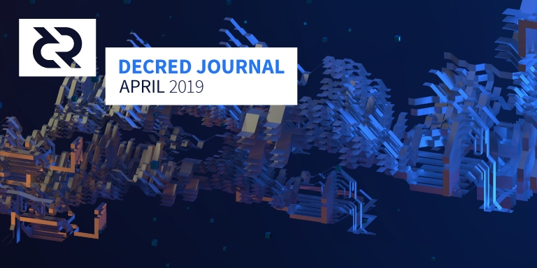

Decred月报 - 4月

4月份，我们在 Decred 测试网上推出了闪电网络！欢迎查看测试，并在 Decred 上构建LN。
5月9日闪电网络将会在编号为 DCP0004（第342,784区块）链上投票激活时获得主网支持，但它需要一段时间的测试才推荐在主网上使用 - 目前正是在 Decred 测试网上尝试 LN 的时候。同时提醒所有节点很重要的是必须在 5月9日 前升级以避免被分叉出网络！
Politeia 软件在上线的提案网站上部署了大量性能改进和新功能（如提案版本的差异查看）。承包商管理系统也已准备好以基本形式进行，并将用于收集和处理 4月份 的承包商发票。
本月的 Decred 月报版本比平时更分散，@bee 退下了他一直以来在月报里扮演的重要角色（但依然积极提供指导），其他贡献者也比平常做得更多。
请马上升级节点!
成功通过投票的规则更改 DCP0004 (为启用 LN 更新序列锁定规则)将于 5月9日（第342,784区块）激活。一旦有人根据新规则进行交易事务，任何仍遵循旧规则的节点（即v1.4.0之前的任何软件版本）将被视为停止遵循合规的 Decred 主链。因此，非常重要的是所有节点（矿工，选民，用户，商家，服务提供商）必须在 5月9日 之前将其 Decred 软件升级到v1.4.0。别在 5月9日 被分叉出网络！
开发进展总结
dcrd: 重构继续进行，未使用函数和条件清理，改进挖掘代码并修改chaincfg模块。由于之前对版本化模块的工作现已可用并且已完全使用，因此现在可以进行代码升级并确保不会在其他环节造成破坏。
dcrwallet: 代码清理和购票代码的改进。开始为 gRPC API 添加可选身份验证，允许用户省略需要解锁钱包的 API 调用中的密码。这将缓解通过物理和网络分段隔离未锁定钱包时出现的问题。
Decrediton: 使 Decrediton 设计更具流畅性（使其在更小的屏幕上可用）的工作继续进行，为此主题中的几乎所有视图完成了流畅性设计。新的流畅性设计在创建新的钱包视图中已实施。用于向 Decrediton 添加嵌入式 LN 钱包 UI 的提交也已开放; 此初始版本将允许 Decrediton 用户执行开/关频道，存/取款，创建交易和发送付款等操作。
Politeia: 在提案网站上进行了项升级部署，这带来了显著的性能改进，为提案版本历史记录查看器下拉菜单添加了差异查看器，并更改了评论的排序默认设置优先显示评分最高的评论。承包商管理系统也已上线，承包商将使用它来提交 4月份 的发票。
dcrlnd: Decred 的 闪电网络(LN)已在测试网上运行！经过几个月的努力和整个软件的多次修整，Decred 原始 lnd 守护程序的官方端口，dcrlnd 已经发布 并可在测试网使用。来自上游闪电网络项目的所有单元和集成测试都正在通过，并且LN在 Decrediton 的初始集成即将完成。
一个 lnd 水龙头 (faucet) 已经被设计成符合 Decred 的外观和感觉。这里查看几个测试网水龙头中的一个。
目前正在准备主网的 LN，并在 5月9日 左右的第 342,784 个区块中，在 “fixlnseqlock” 议程激活，之后在主网上即可以实现 Lightning。但这需要时间多次进行测试及改善用户体验。目前使用 Decred 的 LN 应该被认为是实验性质的，并且不应涉及大量的 DCR。 测试网将是 LN 活动一段时间的地方。您可以通过此网络图表跟踪测试网 LN 的增长情况。
dcrandroid: 小错误修复和语言优化继续进行中。可选的生物识别身份验证选项也在进行中，并将在下一版本中发布，在输入钱包密码短语时添加额外的安全层。
dcrios: dcrios beta 版本在社区成员继续测试下改进了 UI。 目前只剩下小部分未解决的漏洞，开发人员也正继续通过正式的 Apple Store 申请批准应用程序。
dcrdata: v4.1.0 已发布并部署于 explorer.dcrdata.org。此版本增添实时追踪共识规则更改的链上投票进度，以及在发布笔记中列出的一些性能和开发改进。Politeia提案的投票图表也已添加到alpha网站上并正在进行迭代。
docs: 新页面: 预挖 描述了 Decred 的空投和推出（常见误解），验证投票 描述如何验证选票投票, 硬件钱包 则提供支持 DCR 的硬件钱包基本信息。Decred 的治理入门 页面则被重新翻修以更好的介绍选票投票和 Politeia 提案系统在决策过程扮演的角色。
dcrtimestamptweet: 在三月底推出了一个新的推特机器人。只要在评论中提到 @dcrtimestampbot,机器人将把帖子收录到 IPFS，然后使用 dcrtime 将数据时间戳到 Decred 区块链中，并向用户发出确认消息。
4 月开发活动数据: 分布于 10 个最活跃存储库（repositories) 有 326 个有效 PRs, 509 个主要提交, 96K 行添加 及 55K 行删除。每个存储库中有来自 1-9 位开发者的贡献。
人员
欢迎新到来的首次贡献者，代码在 GitHub 上合并：@devwarrior (atomicswap) 及 DominicTing (dcrweb).
恭喜 5 位新的贡献者列入官网decred.org:
- Angel Dominguez (@anshawblack, 市场)
- Thiago de Freitas Figueiredo (@thi4go, 开发)
- Hugo Chang (@changhugo, 社区经理 - 中国)
- Dominic Ting (@dominic.d, 社区经理 - 中国)
- Michael Guimaraes (@michae2xl, 社区经理)
1 位不活跃设计人员从 decred.org 被移除: Kärt Koosa (@kart, 插画者)
治理
实施 DCP0004 的共识投票 在4月11日完成，几乎以100％的同意率通过，54.5％ 的选票通过投票积极参与。新规则将于 5月9日 生效，请参阅上面有关升级节点软件的说明。
在 4月里，DCR 基金会收到了 15,460 DCR，并花了 13,943 DCR，使用 DCR 在 4 月份的每日平均美元价格 24.22 美元计算，本月收到 37.4 万 美元以及支出 33.8 万 美元。由于这些付款用于支付 3 月份完成的工作，因此可以用 3 月份的平均价格 18.14 美元计算 - 在这种情况下，美元收到的数字是 28.0 万美元以及支出 25.3 万美元。5月3日 为止，基金会余额为 608,069 DCR (按 26.20 美元计算相当于 1600万 美金)。
于 5月7日 的提案状态:
4 项新提案提交:
- 去中心化社区基金 Decentralize Treasury Spending 由 @moo31337 提出, 提案提议每个月进行链上投票核批社区基金会开销。这项提案吸引了很多讨论并在新闻中报导。其中一些实现细节故意被省略：
原因是在我们多年的软件开发经验中学到的是只计划未来两步并在达到目标后再进行评估。规划太遥远几乎总是以现实与计划相冲突而告终。所以，没错，目前计划是有意含糊的。一旦技术实现变得明显，我们就可以再决定这个过程细节。(@moo31337)
很多提问已获得解答并且投票已经在 5月6日 开始。
-
EXMO交易所的法币交易对整合 Fiat Pairs integration on EXMO Exchange 由 @vadymprykhodko 提出，要求 ~23,800 美元 将 DCR 与 BTC 和 两个法币交易对（DCR/RUB，DCR/UAH）整合到 EXMO 交易所。这项提案以 62.6% 同意 通过了投票。
-
Decred 的宪法更改 Amendment to Decred Constitution 由 @richard-red 提出，提议对 Decred 宪法作出一系列更改，以将其更新，并澄清宪法在项目里的状态。投票以 12K 选票参与率 99% 同意通过。感谢所有在过程中参与提过意见的人们。
-
通过提案系统宣传 DCR 故事 A Journey to the Future of Work- Telling the DCR story through Politeia 由 @jer979 提出，要求 40 DCR 编写一篇关于提交提案，经历评论和投票阶段经验的文章 - 以及另外，如果该文章被纳入“一级”媒体的 60 DCR 支付。
另外 3 份 提案的投票也在本月结束：
- 提案资助 Trust 钱包整合 Trust Wallet integration (预算 3，300 美金 以及长期的 每月100美金)以 67% 同意票通过。
- 类似于 RFP 流程的 ATM 整合提案以 52.5％ 的票数被拒绝 - 这是第一个拥有 >50％ 同意票但被拒绝的提案。在 #proposals 聊天室的一项讨论中,由于投票结果接近，讨论的共识为可以以另一版本提案重新尝试投票。
- 由 @georgepro 提交的非洲宣传提案 bring Decred to Africa (Ghana) 以 5.4% 同意票被拒绝。在投票结果出来后（提案系统Politeia已关闭评论），@jet_user 在 reddit 发表了一篇有关此提案长而周到的评论。
更多更详细的提案系统 Politeia 相关的消息请关注第 14 期 Politeia 简报。
dcrdata 的 alpha 版现在提供图表，显示随时间推移的投票结果，包括正在进行的投票的实时更新。这使得存储在 Git 存储库中的 Politeia 数据更易于访问。
网络
算力: 4 月算力开始 ～377 Ph/s 及 ～530 Ph/s 浮动。低点为 276 Ph/s 高点为 676 Ph/s。在 5月1日 根据 dcrstats.com 数据显示，矿池算力分布为：Poolin 21%, lab.antpool.com 20%, F2Pool 18%, BTC.com 10%, UUPool 9%, Luxor 2.9%, CoinMine 0.37%, BeePool 0.09%, suprnova 0.04% 及其他 18.8%。矿池分布数据为大约值无法精确计算。
投票: 按 5月1日 dcrstats.com（数据显示）, 30日 平均票价为 117.2 DCR (+ 4.9)。价格在 105.4 DCR 至 127.7 DCR之间浮动。锁仓数额为 4.51-4.76 百万 DCR, 大约占总流通量的 47.0-49.1%。
节点: 截止于 5月7日，dcred.eu 显示 共有 180 public listening Node 及 201 Normal Node。版本分布: v1.5.0 dev builds: 6.9% (+0.6%), v1.4.0: 61% (+6%), v1.4.0 dev and rc builds: 6.1% (+1.1%), v1.3.0: 11% (-6%), v1.2.0: 7.9% (-1.6%), v1.1.2: 4.3% (+0.3%), v1.1.0: 1.4% (-0.3%)。
DCP0004 以几乎100% 通过的同意率通过。新规则将于 5月9日（第342,784区块）激活。请确保软件升级到最新版本。
整合
CoinZark 添加 Decred 对超过 25+ 支持的货币兑换。
Vertbase 公布 他们将为 DCR 增加 GBP 和 EUR 交易。在 UK 使用 GBP 交易对的注册及购买将在 5月2日 开启。
警告: Decred 月报作者无法确认以上交易所可靠性。请自行进行审核才将您的个人信息或财产信托于任何实体。
外联活动
四月是一个非常忙碌的月份，协调外展，计划聚会和活动，并在各种平台上设置开始执行营销计划。@anshawblack在电报群中获得了 Decred DCR 的管理权，并通过共享优质 Decred 内容促进了出色的讨论。以下是 Politeia 批准的营销计划的最新进度更新。
Decred Assembly 视频: @Dustorf & @jy-p 做了练习，然后在两周后回来录制 Decred Assembly (DA) 改版的第一集。 同时也决定了不是录制单个节目，而是单独录制片段以生成更多更易消化的视频。四月份中，我们将与 @jy-p 深度讨论 DEX，Decred 分布式的与 @elian 谈论墨西哥和南美洲，以及与 @richardred 分析 Decred 利益相关者无法作出好决定的这项误解。为了每周发布这些视频，目前仍然有一些管理工作。我们希望在月报发布时这些视频能顺利完成。五月版已经安排好了。
Decred 通讯简报 Decred Newsletter: 我们决定使用开源服务phpList，这造成了一些延迟。现已设置好构造并已成功发送测试。目前，设计团队正在构建一个模板，使其看起来很漂亮，他们也正在努力将注册链接合并到decred.org 中。完成后，我们将分享以便让人们注册，我们希望在5月份内发送第一封电子邮件。
网站更新 Website Updates: 体系结构设置已完成，并为大多数附加子页面编写了初稿。此外，还为新的介绍性视频编写了第二版稿，该视频将分为三部分：安全、适应性强、自筹资金。
Decred 深度播客 Decred in Depth Podcast: @anshawblack 将在 5月11日前往纽约参与 Blockchain Week 并计划与 @jy-p, @jz, Murad Mahmudov, Joel Monegro, Permabull Niño, 和 Trey Ditto 录制播客。他将在之后的几个星期和月份进行剪辑。
社区组织 Community Organizers: Decred 聚会的数量和参加活动的数量突显了我们在世界各地动员社区的成功。会议指南和执行聚会的工具将成为网站更新的一部分。在此完成前，可以在 GitHub 上的 Design Repository 中找到资源。提醒一下，如果你想在你附近办聚会，那就开始吧！ Decred 社区成员在所有事情上都处于领导地位，没有人需要决定在哪里发生什么事，所有事情都是社区主导。
Decred 已在币安获得 V Label 认证。通过认真需要一名项目的官方成员（拥有Decred 邮箱地址并已通过币安认证的成员 - @s_ben)审核并确认 Decred 的资料页面。这使我们有机会更新项目描述以更准确，并结合最新的营销信息，以及纠正有关Decred发布的一些错误信息（一项常见任务）。
社区活动
已出席:
- 4月4日至5日 - 阿根廷比特币日 - 阿根廷科尔多瓦。 @elian在活动中发表了主题演讲 “20分钟了解Decred”，并且在研讨会发表了 “如何成为Decred承包商” 的演讲。见报告。(照片)
- 4月8日 - Decred：工具，使用和贡献 - 美国波特兰。 17名与会者和@oregonisaac深入讨论了Decred工具的使用和贡献，以及@raedah，@oregonisaac和@s_ben的开发更新。社区期待下一次聚会。(照片)
- 4月18日 - 开源项目管理：今天和明天 - Coinbase 总部，美国旧金山。该活动与Coinbase 托管合作在Coinbase总部举行。 @lukebp谈到了Decred独特的治理和自筹资金模式，然后就不同融资模式进行了适度的讨论，卢克回答了一个多小时的问题，约有70人参加。(照片：1 2)
- 4月18日 - 币安 南美 AMA - 线上。 @elian与币安南美社区的成员一起参加了西班牙语AMA，回答了Facebook和Telegram用户提出的问题。
- 4月22日至26日 - Talent Land - 墨西哥瓜达拉哈拉。 @elian 提供了 Decred 的活动参与摘要。超过60,000人参加了这次活动，Decred 是 “Blockchain Land” 中唯一的主要加密货币，大约35人参加了 “Decred：未来的货币” 演讲，还有数百人在展位上与Decred代表交谈。与会者乐意接受“成为您自己的银行”的想法和Decred自筹资金开发开源软件的模式。(照片：1 2)
- 4月25日 - Decred 芝加哥聚会 - 美国芝加哥。Jack Miller 在芝加哥举办了首次聚会。
- 4月29日 - 华人社区AMA - 线上。 @Haon 和@guang 与 Decred 中文社区的成员进行了AMA，回答了30多个问题。
- 4月30日 - 加密货币治理 - 这是生存问题 - 澳大利亚墨尔本。 Decred 主持了这个小组讨论。
即将到来的:
- 5月10日至17日 - 纽约区块链周 - 美国纽约。由 7名 Decred 社区成员组成的团队将参加各个地点的活动。Ditto 在努力协助 5月15日 举办的 AtomicSwap 活动(以前称为 BreakerCon )举办成功。您可能注意到 Breaker Mag 正在解散，所以Ditto 现在与顶级加密货币媒体 The Block 共同举办此活动。在纽约区块链周期间，@jy-p 将会在主演讲台上就 “理想主义者困境” 议题发言，他将与其他项目领导人讨论去中心化的意义：Dash 的 Ryan Taylor、Beam 的 Alexander Zaidelson 和 Orbs 的 Tal Kol。
- 5月18日 - 币印中国行 - 中国成都。 @Dominic将会讨论 Decred 的潜在价值。
- 5月18日 - Criptolatinfest - 哥伦比亚波哥大。 Decred将有一个发言机会。
- 5月20日 至 21日 - La Conexion - 哥伦比亚麦德林。 @elian将发表关于治理的主题演讲。
- 5月23日 至 24日 - BitcoinDay Uy - 乌拉圭蒙得维的亚。将有机会在乌拉圭比特币日演讲 Decred。此活动由比特币日阿根廷组织者组织，Decred 因为在阿根廷的成功展示而再被邀请。
- 6月5日 - Decred Meetup - 德国柏林。@jholdstock将概述 Decred，BlueYard 创投的 Philipp Banhardt 将讨论他们的投资论文，由 BlueYard Capital 主办。
- 6月12日 - Decred：A Deralralized Autonomous Entity - 美国弗吉尼亚州阿灵顿。由 Akin Sawyerr 组织。
- Jun 19-23 - Campus Party Brasil - 巴西巴西利亚。 一如既往，Decred 将会踊跃参与活动。
- 6月初，日期未确定 - Decred 纽约聚会，由 Staking 的 Cole Kennelly 发起，将会邀请 Decred 参加生态活动。
- SF 聚会小组将会分享他们下一次活动的详细信息，可能会在 6月初 举行，主题是闪电网络。
媒体
Ditto 概览:
- @jz 与The Block 对话谈论关于 Decred 上线币安的经验。
- 选票投票者信息文档被创建，为用于教育人们如何使用 Decred 投票系统一个工具。社区的意见被纳入，并正在审查第二版。
- 一篇关于去中心化社区基金的提案文章在 InvestInBlockchain.com 发布
- @matheusd 在 Medium 草拟了一份关于闪电网络测试网的博客文章被收录到 HackerNoon。
- 在 r/cryptocurrency 上与 @jy-p 的 AMA吸引了超过 87万读者。这项活动由 @lukebp 在 三藩市 Coinbase 发表演说时获得了这个机会。
- Ditto 和 @Dustorf 将为 Decred 社区举办一场 AMA，回答任何关于 PR 和市场的问题。目标于 5月17日 1200 EST（UTC-5）在 Reddit， Matrix, 和 YouTube 进行。
部分文章:
- @Haon 的 “打开Decred的社会契约” - Unpacking Decred's Social Contract (medium)
- @matheusd 的 “率先测试 DCR 闪电网络” - Be one of the first to test the DCR Lightning Network(medium)
- Crypto Briefing 讨论 Decred 并评级 C+ (6.4), 里面提到 “... Decred 相比对手有较小的商家网络及较不活跃的生态。另外，巨大的通胀率不鼓励用户使用 DCR作为支付货币。”
- Roy Learner 的 区块链选民的冷漠 - Blockchain Voter Apathy (medium) - 讨论部分区块链项目（包括 Decred )里的选民参与率。
- @ richardred 的 区块链提案投票笔记 Blockchain proposal voting notes(github) - 回顾 Decred，Dash 和 Aragon 提案投票的数据。
- Amentum Capital 的 什么类型组织需要自治 - What Types of Organizations Should Be Autonomous? (medium)。
- Jesse Walden 的 过去，现在于未来： 从合作社到加密货币网络(a16z.com, 三月份月报错漏)
翻译:
- Guides to solo staking and ticket splitting 由 @wanbihou 翻译成中文。浏览 dcrclub.org查看更多 Decred 中文翻译文章。
- @akinsawyerr 将 iBotics Research 的评级从 西班牙语翻译至英语。
视频:
- @jy-p 的 在 OKCoin + Decred 三藩市活动中有关 Decred 概览的主题演讲。
- @joshuam 在 TABConf 2019 的演说， 介绍 Decred 加密货币，社区及经济、组织。
音频:
- 旧的 Decred Assembly 被上传 至 Apple 播客。感谢 Ryan。
社区
截止于 5月2日 的社区数据 :
- Politeia 用户: 167
- Twitter 关注量: 40,456 (+147)
- Reddit 关注用户: 9,425 (+20)
- Matrix 用户: 312 (+28)
- Slack 用户: 6,685 (+46)
- Discord 用户: 2194 (+70), Verified to Post: 199 (+38)
- Telegram 用户: 3,668 (-374)
- YouTube 关注量: 3,771 (+7)
- Facebook 关注: 3,218 (+53), likes: 2,956 (+40)
- LinkedIn 关注: Decred page 515 (+20)
- GitHub dcrd 关注量: 486 (+7), forks: 1,285 (+28)
社交系统新闻：
- 托管 matrix.org 和 riot.im 的服务器在 4月11日 遭到入侵并需要停止运作来进行紧急安全维护。如果您的服务器是 matrix.org，请更改您的密码。请参阅事件报告和推特时间表。有趣的是，黑客发布了慷慨而有些幽默的建议。Decred 的服务器(matrix.decred.org）没有受到影响。感谢我们的管理员维护大量的自托管基础架构。这个事件扰乱了我们的通信，因为很多人使用Riot.im 的浏览器客户端。为了防避此类问题，用户应考虑安装独立客户端（桌面或移动）。另一个想法是自托管 Riot。
- 聊天桥发生多次通讯中断，许多消息未通过聊天桥传递。
- Matrix Federation 计划停止支持自签名证书并依赖证书颁发机构。
- 在 Facebook 上注意到有 “Decred” 假冒账户在活动，请保持警惕。
- @degeri 加入成为新的 Reddit 主持人，维护 r/decred 和清除垃圾讯息，欢迎！
部分 Reddit 讨论:
- 48% 的币锁仓投票是否造成低流通量?
- Decred 被列入 Bitwise 的 Top 20 to Bitwise Top 20 中型加密货币指数。
- fintechprof 将'梭哈' Decred (投入精力，而不是不负责任的投入他们的存款/贷款)，并概述了这股热情的原因
- Decred 爱好者受邀加入另一个关于加密货币 staking 的新 subreddit。
- 关于 Decred 用于选择选票的伪随机数生产器的细节。
- 提议第二项先发修改将 2月8日 列为国际 Stakey 日预提案。
- 随时间推移透视可扩展性和区块链大小。
- @jy-p 在 5月2日 于 /r/cryptocurrency 进行了 AMA 并收到了 69 个评论。
市场
在 4月中 DCR 交易价格为 美金 19.97-26.68 / BTC 0.0045-0.0052。平均日汇率为 24.22 美元。
比特币于 4月3日 突破 5000 美元的关口，大多数其他加密资产像往常一样对美元价格上升，但对BTC价格降低。比特币在本月多次试探 5,500 美元，但最终徘徊在 5,000-5,500 美元之间。
相关外部信息
@richardred 收集了 Decred、Dash 和 Aragon 的提案投票数据，并发布了一些基本统计，如每个项目的平均投票参与率。 在撰写本文时（4月6日），根据已完成投票的提案，Decred 的链上共识投票参与率为 76％，Politeia 提案投票参与率为 31％; Dash 主节点的财政提案平均参与率为 19％; Aragon 的治理提案平均 ANT 币参与率为 4.5％（无法直接比较，Decred / Dash 只有票据持有人/ 主节点可以投票）。
经过 2天 的投票，第二轮 Aragon AGP 投票在 4月27日 结束。9项提案获得通过，平均参与率为流通ANT币的3.8％。 通过了 6 项提案，拒绝了 3 项提案。
在 Aragon One 的领导人表示他们正考虑在 Polkadot (波卡)上开发第二个 Aragon 应用程序后，有三个提案涉及 Polkadot。利用 Aragon 基金的 ETH 去购买 DOT 的提议（旨在维持一个分链并参与Polkadot 治理）被 ANT 选民坚决拒绝，只有 7％ 赞成票。提议 Aragon 专注在以太坊并放弃 Polkadot 被拒绝（赞成率为31％）。如该提案被通过，将导致 Aragon One 与 ANT 社区出现重大矛盾，Luis Cuende 在接受采访时表示他将在下一轮 AGP 投票中提交反提案。在第三个与 Polkadot 相关的提案中，72％ 的 ANT 投票批准 Aragon 将 Edgeware parachain 上的代币 “锁定”，让 AA 有相当大的自由决定锁定多少币以及锁定多长时间。另一个有趣的提议是，Aragon 要求有权直接安排安全审计（而不是通过 AGP 流程对这些决定进行投票）。该项目获得93％ 赞成票，而目前正在进行安全审计的公司，要求后续资金的提案被拒绝，获得 35％ 赞成票。
值得注意的是，一名大户（第 7 大 ANT 钱包，持有 2％ 代币）在接近投票结束时投票，并改变了几个 AGP 投票结果。
Dash 已完成sporking 升级并启用确定性主节点列表（为了阻止 PoW 攻击而进行链锁）和 Auto InstantSend。这次激活导致财政提案投票重置，导致在本月大部分时间里，只有少数提案达到所需的投票率。当超级区块投票于 4月29日 结束时，选民参与率回到正常范围内，15个提案符合要求。 660 枚 DASH 仍然在超级区块，并已经转到 Dash 基金，这种资金利用率不足的情况并不是特别罕见。其中两个提案来自两个竞争的公关公司，Wachsman 和 Shift。提案之前，Dash Core Group自行决定雇佣公关公司，并一直沿用 Wachsman 的服务。Shift 的提案：每月花费 1万 美元，以 536票 赞成通过（虽然 90％ 投赞成，但投票率偏低），而 Wachsman 提案被拒绝，得分为-206（拒绝票数多于赞成）。
EOS 宪法已被新的用户协议所取代，该协议由 EOS 纽约提出，并由 21 个区块生产者 (BP) 批准。这一变化在 EOS 持有人公投中提出。公投期限很长(3个月)，并且要到 5月8日 才能完成，对该提案的支持率很高（98％赞成），但投票参与率非常低（1.7％）。EOS 全民公决的法定人数要求为 15％，但鉴于没有一项投票达到这一参与水平，BP 决定绕过正式的公投进程并执行其中一些提案。EOS BP 还批准了 REX（资源交换）的部署，但它在链上执行失败，必须重新提出议案。
Aeternity 计划于 5月7日 举行首次链上治理投票。投票的提案是建立一个 “区块奖励计划（BRI），通过该计划，将 0-20％ 的矿工奖励分配给开发队伍”。该公告提到 Aeternity 的 ICO 基金足以为未来几年的开发提供资金，并将 BRI 定位为过渡到自治平台的一步。 BRI 资金将保存在列支敦士登注册的慈善基金会，并由技术委员会管理。AE 持有人将投票支持 0,5,10,15 或 20％ 的区块奖励 - 只要超过 50％ 的 AE 赞成大于 0％ 的选项，投票将通过，并采用大于 0％ 选项的加权平均票数。这将使一些拒绝提案的 AE 持有者难以选择，投票支持0％并希望占多数（否则将被忽略）或投票支持5％以降低加权平均值（如果提案获得批准）。
Ycash，Zcash 的 “友好分叉” 宣布 Ycash 将构建 Zcash 链的快照，并改变了以下两点（将当前 20％ 的创始人奖励替换为 5％ Ycash 基金会奖励，并将 PoW 挖掘算法切换为普通硬件友好的算法）同时整合 Zcash 的未来改进。Zooko Wilcox在 2017 年写了一篇关于 “友好分叉未来” 的博客文章，这似乎激发了 Ycash 作为友好分叉的定位。Zooko 还对 Ycash 发表了评论，认为 Ycash 为 Zcash 做了贡献。
Zcash 基金会宣布为 KZen Networks 的一个研究项目提供资金，以便为 Sapling Zcash 实现 n-of-n 多签名隐私交易，而无需更改共识代码。 这项工作与 KZen 关于阈值签名的工作有关，类似于多签名，但与常规签名无法区分。
“MakerDAO” 本月有一些争议，最初是 DAI 与美元的挂钩问题（稳定费在不断提高，但未能恢复联系汇率），然后是一些关于 MakerDAO 团队内部冲突的信息。Zandy 报道了 Maker 的历史和 Maker 基金会的起源作为最后的举措，以减轻以下事情的影响，包括团队成员离开、建立小圈子、新的路线图、董事会成员被解雇并放弃他们的私人多签密钥、以及完整的泄露信件。
0x 的路线图提出了 ZEIP-31，将激励做市商持有 ZRX，提高 0x 和 ZRX 代币持有者之间的相关性。ZRX 旨在用于治理协议，但在主要用户不持有任何 ZRX 的情况下，ZRX 起不了治理的作用。该提案是漫长建立治理机制的开始，即开发和审核新的智能合约，然后让代币持有人投票以批准/拒绝变更。
比特币（现金）Satoshi 愿景（BSV）已经被许多交易所除名，这是 Craig S Wright 与比特币社区一些成员之间的争斗。讽刺的是，一个前线人员的不良行为给BSV带来了诸多麻烦。
G20 成员国将于 6月 在日本举行会议，就打击加密货币洗钱和恐怖组织融资达成一致 - 其主要目的是反匿名，并能确定交易加密货币的个人身份。
前 Mozilla 高管指责谷歌多年来抵制 Firefox - 通过一系列 “错误” 导致谷歌产品在 Firefox 浏览器中出现问题。
关于月报
四月为英文第13期 GitHub 月报。点击这里浏览所有往期月报，翻译等。
大部分来自第三方的信息在基本检查无误后转发。Decred Journal 及月报作者无法验证所有信息。请注意骗局并进行自己的研究。
欢迎在 Reddit, GitHub 和 Matrix 上评论，反馈及贡献。
感谢 (按字母排序): bee, degeri, Dustorf, elian, guang, Haon, issedjur, liz_bagot, lukebp, lustosa, matheusd, richardred, s_ben, saender, sambiohazard.
中文社区
欢迎同时关注英文月报了解更多最新消息
中文月报相关意见欢迎提交到Github
感谢 (按字母排序): dominic, guang, hugo